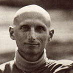

|
 |
Venerable Kittisaro (Randolph Weinberg) was born in 1952 in Tennessee.
He went to a military high school and excelled at wrestling, becoming
Mid-South Wrestling Champion five times, and winner of the 'National
Tournament' championship. At Princeton University he studied History
and Philosophy of Science, and graduated with high honours (Phi Beta
Kappa) in 1974. He intended to go on to study medicine, but studied
English at Oxford instead, after winning a Rhodes scholarship. While
working on a thesis about Aldous Huxley, he started to yearn for some
sense of inner peace. |
|
The following questions and answers with Venerable Kittisaro are taken
from a public talk given in Bath, and a session with religious education
teachers who visited the Devon Vihara -- both in 1986. Q: Could you outline for us your daily routine? IN THE MONASTERY WE RISE AT 4 O'CLOCK. From then until about 4.45 a.m., we get energised doing exercise and so on. At 5 o'clock, there is morning chanting, with an offering of candles, incense, flowers and bowing. The idea is to begin the day by offering that which is beautiful. These actions are a way of pointing our whole being towards Buddha, being collected and awake. So we're setting a direction for the day. Then we make the dedication: 'May my life today be of benefit to all beings.' The sitting meditation that follows is usually for an hour. At 6.30 we clean the house, then have tea and a drink of gruel (like liquidy porridge). I do a reading from the Teachings, or give a talk. Then the monks go on 'alms round' through the villages. As 'alms mendicants', it's our duty just to be visible: not to bother people, not to harass them, but to let it be known there's a monk about. If anybody wants to make offerings or talk to us, then we are available. We now have about fifteen houses in the area where they make regular invitation. So we just walk about quietly with our bowl. We have our meal for the day at 10.30 a.m. This is made up of what's been offered, either on the alms round or by other supporters who have visited the monastery. Then we have a short rest. In the afternoon there's work. I do a lot of receiving guests and travelling to give talks, leading retreats and study. There's always a lot of work to do on the property. We have tea in the afternoon at about five. Then another service, or chanting, at 7.30 p.m., which anyone can come to. On at least two evenings a week I give a formal talk on some aspect of the teaching. Once a week there's an all-night vigil, when we practise sitting and walking meditation until just before dawn. It takes years to learn how to live in a community: how to learn to live with one another, how to live as a celibate, how to live with simple possessions. We emphasise learning how to let go of status, seeing it as just a form of self-conceit. For the rest of my life I will always bow to those who have been in the Order longer than I. That doesn't mean I have to believe they're better than I am just because I'm in that relationship to them; that's how the conventional relationship is with those who are senior. I can use the situation to learn to be humble. In a monastery everyone merges; there are no limits on who can be wise! Now I find a sense of beauty in bowing to the elders. Q: Do lay Buddhists adapt these principles to their situation? There are five principles to follow: refrain from killing, stealing, sexual misconduct, lying and intoxicants. These guidelines enable us to look into our life and see that which causes conflict: to see the impulse which is always wanting something. We look into our heart and see that which exploits and is bound by sexual energy, which doesn't use it wisely. We see the impulse to distort the truth. And recognise how drugs and alcohol are unskilful ways of avoidance. When someone is not living by these principles their ability to endure hardships is wasted away. But if we do accord with them, then the result of that spiritually is that we become able to bear with things. If we're not able to bear with things, we're not able to understand suffering. Q: What does Buddhism teach about love? Buddhism teaches that love has to be understood. Generally we attach to an idea of love: love is liking something. We tend to use the word very loosely. However in the Buddhist sense, to really love something, means to allow it to be, to know it as it is: a willingness to listen and be attentive. When a mother loves her child, she is attentive to that child's needs. That doesn't mean she always likes it -- for instance, when the child is screaming and not sleeping at night -- but she's willing to be with that child. For the mother, the child just is the way it is. As I understand it, the Buddha taught that the purest form of love is to not fight something: not struggling against something, but allowing it to live, to be present in our consciousness. Then we can be attentive to it. Then you say: 'Well, gosh, that seems pretty cold -- that won't change the world!' But when you give attention to something without demanding that it be different, that very attentiveness has a profound transforming effect. This is what I found with my own body and illness. For some reason I didn't die, and now I'm at least able to go around and meet people. For many years all I could do was just be with the body, be with the discomfort, be with the pain as it was. But allowing all that to be in the mind, just as it was, caring for it -- gave so much nourishment. We find in physics now that they don't talk about an 'objective observer' and 'the observed' any more. Physicists have come around to seeing in terms of 'the participant'. The mere fact of looking at something means you start to change it. Now if you look at someone you love and you see something you don't like and try to make them be different, you're actually forcing -- and that can be quite cruel. So the Buddha would say that hatred can never be stilled by hatred. Aversion won't cease by fighting it: only through kindness, through not hating something, can a condition live, and then die, naturally. Hatred has to die a natural death. As soon as we try to kill hatred we actually reproduce it all over the place. And when hatred ceases, love remains. Q: What do you think about doctrinal statements on such things as how the world began and so on? They're just endless speculation -- even though they may be fun to sit down and talk about! The Buddha had a simile that relates to this. He talked about a man who had been shot by a poisonous arrow. Before allowing the arrow to be removed this man demanded to know: 'Who shot me? What kind of bow was it? What kind of arrow was it? Which direction did it come from?' The doctor said: 'If I answer all those questions, you'll be dead.' People used to come to the Buddha and ask, 'Is the world finite or infinite? What happens to an enlightened being after they die? What was the beginning of the world?', and all of these marvellously intriguing questions. The Buddha said: 'If you talk about these questions, you're going to be dead, and miss this wonderful opportunity as a human being to be free.' We need to be free from ignorance, to taste freedom itself -- freedom from imagining that we're a body, freedom from that which ties us down to the finite. The Buddha's teaching always comes back to that which frees you from ignorance and suffering. It's not skilful to spend a lot of time on such doctrinal statements. Time is precious! Pull out the poisoned arrow. Go straight to the root of the problem. Q: What is the Buddhist attitude to social work and engagement in social issues -- doing practical things to help? Is Buddhism entirely impractical? First of all, I think the idea that 'people who are just contemplating don't have any effect on the world', needs to be considered. I know that in our monastery when someone is peaceful, it has an effect on the others; when someone is being very irritable all the time, that also has an effect on the others. Then there's this idea that a great gap exists between action and contemplation. Again in physics, they're beginning to see that the act of looking at something has a tremendous effect. The way we look at things creates our world, our whole attitude. All our indignation, all our liking and disliking comes from our attitude. A Buddhist contemplative approach would be considering the Four Noble Truths. The First Noble Truth says: 'There is suffering.' Normally we think, 'I am suffering. I want to get out of suffering,' and so we focus on hope, on wanting to get out. The pain looks like something we want to get away from. The Buddha says you'll never get away from it that way. We like to grab hold of pleasure -- but the pleasure changes, because it's a relative truth. Buddhism swings you right out -- the First Noble Truth -- to look right at pain or unhappiness. It is the same thing as when Jesus said: 'Pick up your cross.' We've got to bear the cross: the whole symbol of surrendering, rather than using his powers to fly up into the sky. We turn to pain and look right at it, feel it and investigate it: 'What is it?' Notice how thoughts say, 'This is pain, this is horrible, I can't take this any more.' We begin to watch the nature of these ideas that we tack onto the pain: making it my pain, and unendurable. Mysteriously, once we start to look at pain it changes too, because it's not a solid thing. So this is what the physicists are learning: just the act of observing something is actually participating in changing it. By looking at suffering, we're actually part of the transformation of it. Understanding it, standing under it, bearing with it, we become free from false notions of pain and pleasure. By investigating it, already we see it as something that appears to us, and then dispassion arises. Now, what about the kind of action you're talking about? Buddhists are encouraged to be open and see what needs to be done, but not to look too far away too soon. It's easy to get fired up about doing something 'important', but what about the ordinary things like getting along with our family, and business companions? If we do not have time for these things, then our work becomes misguided. We may be talking about harmony and peace, but have not yet dealt with the basic problem. So yes: as we meditate and learn a proper perspective on things, we learn to do whatever we can do. Depending on our abilities and the situation we're in, we dedicate our lives to being of benefit to the whole. As a Buddhist monk there are certain things I can do and certain things I can't. My job as a monk is to learn to live simply: eating very simply, having simple robes, learning to rely on that which is offered. Also learning to be available for whoever comes, to develop a willingness to be interrupted. That's being just one tiny cog in this whole cosmos. When each person starts to contemplate what Right Speech is, and what Right Livelihood is, they find from their own heart the most appropriate way to be of benefit to the whole. And at the same time, they're not forgetting to be mindful and attentive. Mindfulness is that which sees that what we do is kept in balance -- sees that we're not being guided by Wrong View. It's a slow process maybe, but it encourages each of us to grow up. We learn to use the wisdom we have, to open up from being concerned with just this body or just this family, or just this country, or just this political party. If we just take sides with one little group, it can lead to so much trouble. But the open mind simply senses suffering wherever it happens to be, and makes an effort to alleviate it. Yes, it's a crime that the world has so much suffering in it now. We have so much power and yet we haven't alleviated a lot of the basic problems. But the problems are not going to be solved by trying to force people. They'll be solved by really giving attention to them and each person doing what they can. Q: Is it really a question of understanding yourself before you can help anybody else? There's a problem in the logic in that. When you write it down in a sentence it sounds like you have to do all the self-understanding first, and then, after you've become a Buddha, go out and help people; and before that you can't do anything. Really it doesn't work that way. Both aspects work together all the time. In my own case when I was in Thailand I used to feel really good being someone who was helpful in the monastery -- helping my teacher, helping all the monks do yoga, always running around doing something 'helpful'. Then when I became ill and unable to do anything, I was totally incapable of being at peace with things. There was no real wisdom. A lot of my action had been coming from desperation. This desperation had actually tainted some of what I was doing. This is why in Buddhism we always talk about balance, and the importance of having a regular time for real quietude. Just how much time one spends being quiet is up to each person -- a minute, or just five minutes of sitting down and being still is useful. Then we can notice the pull of what we think we have to do; the guilt of thinking we're being selfish -- or whatever there is. Getting those feelings in perspective -- seeing that which is running us around all the time, puts us in a better position for understanding life. If we wait around until we're perfectly enlightened -- I tell you what, I wouldn't be here tonight talking to you all! You'd have to wait until the cows come home, and they wouldn't be coming home! Because there's always another doubt that comes in: maybe I'm not ready, yet. If the thought comes: 'Am I ready yet?', I see that as a thought -- right here and now. If, when I'm meditating that thought comes, I see that it has a beginning ... 'Am I ready yet?'... and that that thought has an end; and noticing that when that thought ends, there's peace in the mind. When I can see that the thought is just a thought which comes and goes, I can see it as a changing condition in the mind. I don't have to make a problem out of it any more. I don't have to wait for the time when there are no more doubting thoughts. I just know it's a doubting thought and I can offer what I'm able to. This brings forth patience and equanimity. And this is what we can do in an immediate sense. How many times has someone passed us on the road too quickly and we've let out a whole chain of profanities? So we start with the little things. If we want to be like Jesus and save the world, that's fine, but where have we got to start? The Buddha started with the little things; he said, let's be honest, climb the tree from the bottom, you don't jump into Nibbana, you don't jump into God; you first learn to be patient with what's already happening -- like a headache. Then one is building up mindfulness in this present moment. Q: Is it going to lead to a universal impracticality if we take up Buddhism? ... How do you feel about going into our technological world and making the changes that are needed? One thing I need to say is that it isn't really for me to make proclamations about what 'Buddhists' think and feel. Are such statements really useful? In Buddhism the whole teaching is about a path towards Awakening. Each of us is seeing this room from a different perspective, and so for me to tell others what they should see or do is basically impossible. As a general reflection, though, I feel we have tremendous power now to manipulate things. We have the ability to create all sorts of things through science, and we're beginning to understand some of the laws of how materials -- what we call the 'aggregate of form' -- how these operate. We have great power to change things, to move things, to dig up the earth, to send people to the Moon, to blow up the planet. We have tremendous abilities to produce. Our language and society is all about being productive. Well, the religious impulse realises that we have gone too far into the world of manipulating things to become as we want them. There's an idea that if we eradicate enough diseases through this marvellous science then we'll be disease-free, pain-free, trouble-free, and then we'll be happy. But that's a materialistic extreme. And when we go to an extreme we only see life as it could be -- through concepts. There's tremendous power in the desire to create. But this desire to make things be as we want them can also become very cruel. Although we have this tremendous power, we have still hardly moved in our ability to get along with one another -- we're still fighting, getting separated, and misunderstanding each other. So the religious impulse tells us how to appreciate things. It talks about opening the heart. When we were children and went to the seashore we would look at the vastness with our eyes wide open. Wind blowing in ... thousands of waves ... the roar of the sea ... The mind had no way to manipulate that vastness. So when our mind is open, we're just listening and watching. And in that state of wonder, the state of awe, the state of communion, we're actually appreciating. Now that's the state of love, the state of truly being with something as it is, whether it's horrible or pleasant. And in that state we are a part of the whole thing -- we are connected to the whole. But that can also become an extreme! What are we going to do about all that needs to be done if we're attached to being in a state of awe? So it's not a matter of one extreme or the other. There's nothing good or evil about modern medicine, or nuclear technology, or any of these things. But often the human minds that are using them have become divorced from reality. So rather than make proclamations about what people should do in the active sense, I'd encourage everyone to open up to life ... and then we start to see how we actually feel about pain -- 'I don't like it.' When compassion arises we are able to suffer with others; we actually vibrate with them. We truly realize that they're suffering and then we're simply not inclined to do things that hurt. But if you just tell someone 'don't do that', 'be compassionate', such issuing proclamations is using force. You might get people to act the way you want them to, but there would still be avijja -- ignorance. So the Buddha taught that the source of the entire problem is ignorance. We point at that, and out of awareness naturally comes forth compassion -- that being at one with the whole. |
| Home Page |